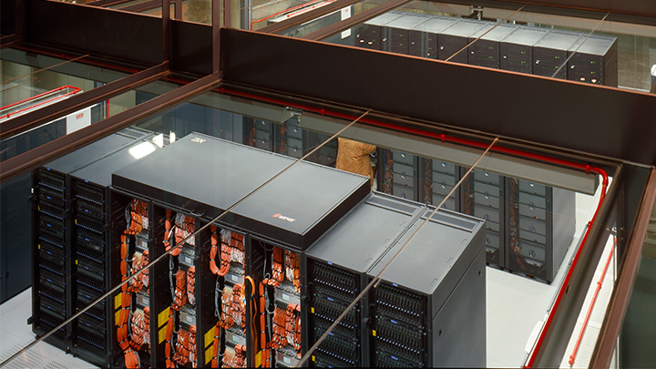
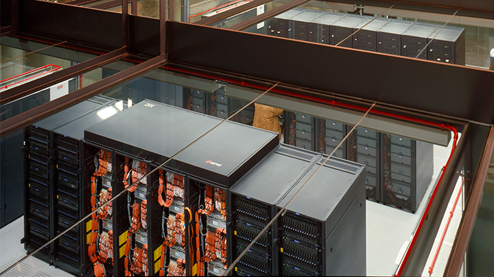

O que é o MareNostrum?
MareNostrum 5 é um supercomputador EuroHPC (European High Performance Computing) pré-exaescala hospedado no BSC-CNS(Barcelona Super Computer Center - Centro Nacional de Supercomputación). O sistema é fornecido pela Bull SAS combinando as arquiteturas Bull Sequana XH3000 e Lenovo ThinkSystem e possui um poder computacional de pico total de 314PFlops. O sistema disponibilizará 4 partições com diferentes características técnicas que em conjunto poderão cumprir os requisitos de qualquer utilizador de HPC.
Este supercomputador pré-exascala auxiliará o objetivo da UE de equipar a Europa com a mais avançada tecnologia de supercomputação e acelerar a capacidade de pesquisa em inteligência artificial (IA), facilitando novos avanços científicos que ajudarão a resolver importantes desafios globais. A intenção é abrir caminho para uma ampla gama de aplicações complexas específicas para computação de alto desempenho, incluindo pesquisa e engenharia climática, ciência de materiais e ciências da terra, abordando efetivamente certas tarefas que excedem os recursos da computação em nuvem.
O supercomputador custou cercas de 202 milhões de euros e foi em 50% financiado pela Comissão Européia, e os restantes 50% foram assumidos por Espanha (na sua maioria), Portugal e Turquia.
- A comparticipação nos custos permitirá a cientistas de cada um dos três países usar o supercomputador em 50% do seu tempo de funcionamento.
- Os restantes 50% do tempo disponível serão distribuídos pela empresa europeia criada em 2018 para desenvolver a computação na União Europeia (UE), a EuroHPC, que abrirá concursos a nível europeu com esse objetivo.
- Para dar uma ideia da potência do MareNostrum 5, o BSC (Barcelona Supercomputing Center) compara a capacidade máxima de cálculo do supercomputador ao de mais de 380 mil computadores portáteis de gama média-alta. Os cálculos do MareNostrum 5 numa hora são equivalentes aos que um portátil desses faria em 46 anos.
- O supercomputador inaugurado hoje ocupa 800 metros quadrados num espaço que tem mais de seis metros de altura e é 23 vezes mais potente do que o predecessor (MareNostrum 4) e cerca de 10.000 vezes mais potente do que o primeiro MareNostrum.